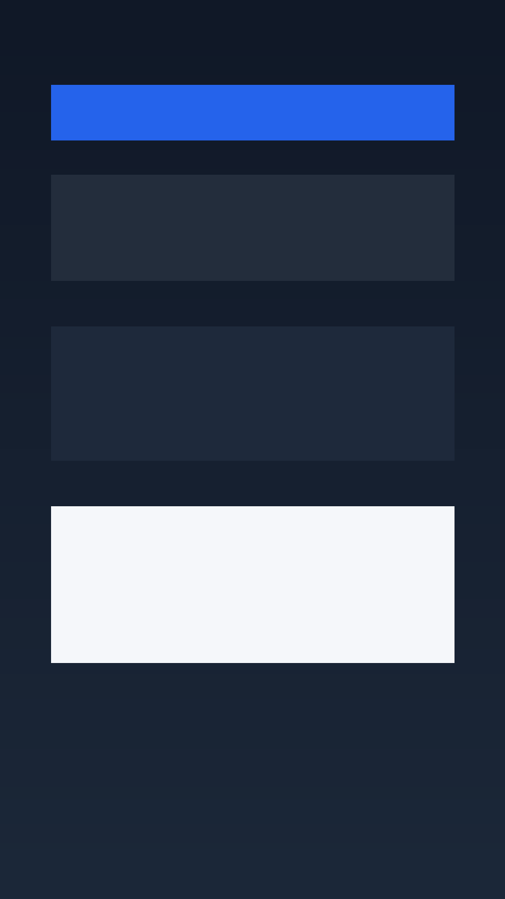
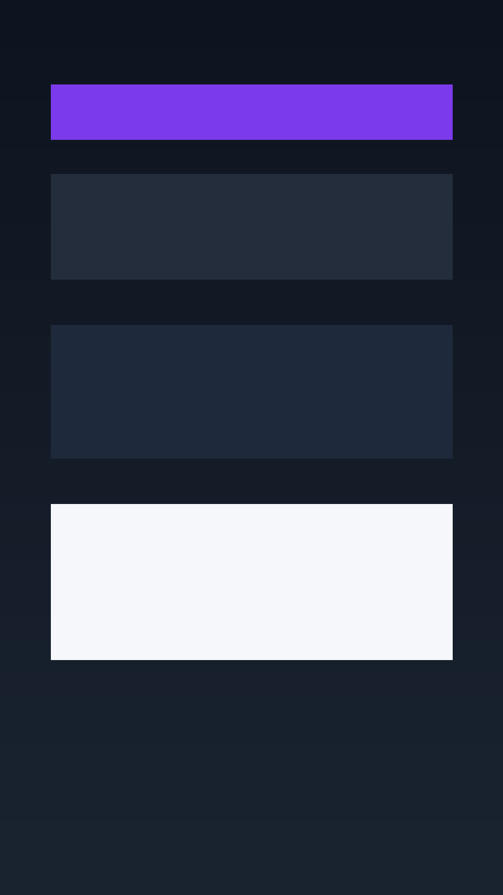
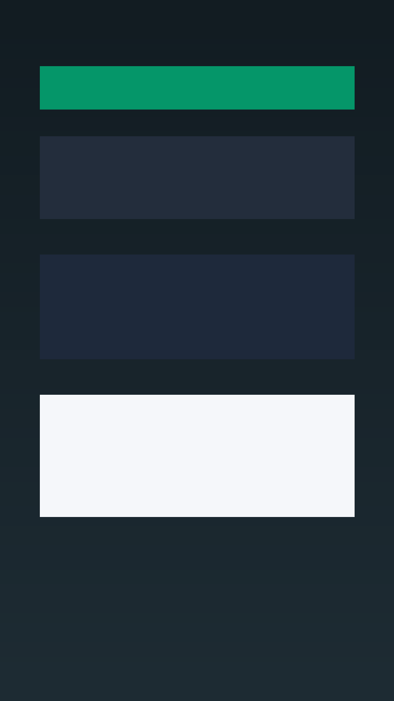

Daily planning
Organize your next actions and keep the day clear.
Android APK
Personal productivity, habits, goals, journal, reviews, and daily planning in one simple app.
Download Latest APKLatest version from GitHub Releases. Android may ask you to allow installing apps from unknown sources.
Loop is a focused personal operating space for planning your day, tracking habits, reviewing goals, and keeping lightweight journal notes without a complicated setup.
Organize your next actions and keep the day clear.
Track routines, goals, reviews, and momentum in one place.
Capture reflections and useful context as you go.
This APK currently uses the app state available in the Android project.



Public APKs are published from semantic version tags such as v0.1.0, v0.2.0, and v1.0.0. Each release keeps its own versioned APK and a latest-download asset named Loop-latest.apk.
Current release pipeline builds a debug APK until production signing is configured.